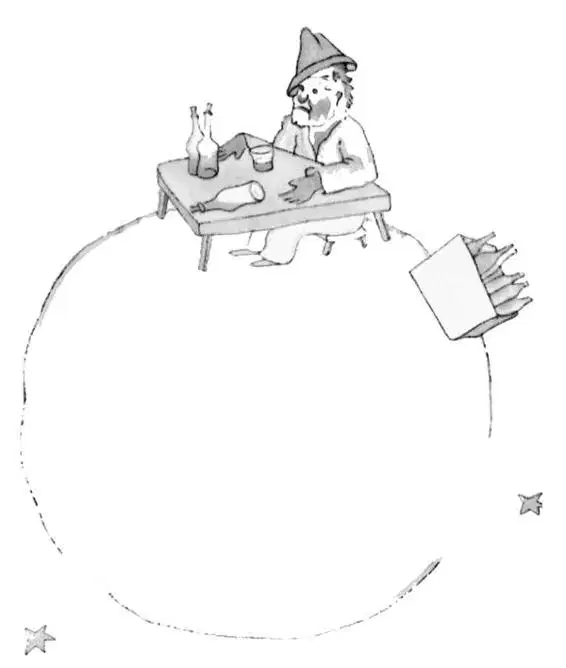

CHAPTER 12
第十二章

—the little prince visits the tippler
——小王子拜访酒鬼
The next planet was inhabited by a tippler. This was a very short visit, but it plunged the little prince into deep dejection.
下一个星球上住着一个酒鬼。这是一次非常短暂的拜访，却让小王子陷入了深深的沮丧之中。
"What are you doing there?" he said to the tippler, whom he found settled down in silence before a collection of empty bottles and also a collection of full bottles.
“你在这里干什么啊？”看到那个酒鬼一声不响地坐在一堆空瓶子和一堆没开的瓶子面前，小王子这样问道。
"I am drinking," replied the tippler, with a lugubrious air.
“我在喝酒。”酒鬼答道，样子十分阴郁。
"Why are you drinking?" demanded the little prince.
“你为什么喝酒呢？”小王子急忙问道。
"So that I may forget," replied the tippler.
“好让我忘记。”酒鬼回答。
"Forget what?" inquired the little prince, who already was sorry for him.
“忘记什么呢？”小王子问道，他已经同情起这个酒鬼来了。
"Forget that I am ashamed," the tippler confessed, hanging his head.
“忘记那些令我感到羞愧的事情。”酒鬼垂着头忏悔道。
"Ashamed of what?" insisted the little prince, who wanted to help him.
“羞愧什么呢？”小王子盘根究底，又问道，他想帮助这个酒鬼。
"Ashamed of drinking!" The tippler brought his speech to an end, and shut himself up in an impregnable silence.
“喝酒让我感到羞愧！”酒鬼就此打住，再也没有说一句话。
And the little prince went away, puzzled.
于是小王子就离开了，迷惑不解。
"The grown-ups are certainly very, very odd," he said to himself, as he continued on his journey.
“大人们果真特别特别怪异。”他一边继续赶路，一边咕哝着。